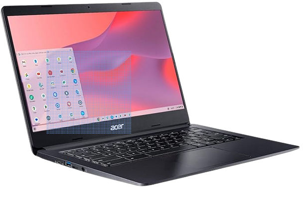

Tech Topics: Making Computer Life Easier
Keeping Windows Up to Date on Your ComputerInstructions for bringing your version of Windows up to date can be found here. Windows 10 and 11 on many computers become out of date because of intermittent use of the computer or because the computer is not permitted to remain powered on for a sufficient period of time to complete the background processes of downloading and installing the update. The result is that the computer slows down dramatically while it attempts to complete the update process in the background. |
Quick Reference Cards
Downloadable reference guides are available for computer basics, Windows 10 & 11, Microsoft Office, Google Docs, Gmail, and Zoom.
Click here for a complete list along with one-click downloads.
Web Browsers: More privacy, reduced advertising
Suggested Search Engine (alternative to Google search, to keep searches private)
DuckDuckGo
Suggested Extensions
uBlock Origin – Greatly reduces number of advertisements on Web pages.
Privacy Badger or Privacy Possum – Protects the user from unnecesssary tracking by Web sites.
Print Friendly & PDF - Makes a Printer Friendly & PDF version of any webpage. Removes navigation, ads, and junk.
Formats the page for print so you save paper and ink.
I Still Don’t Care About Cookies – Reduces number of annoying prompts requesting the use of cookies.
Installation of extensions: From within browser, click on the “Settings” icon. From the dropdown menu, click on extensions.
For browsers based on Google Chrome (e.g., Chrome and Brave), an alternative source is the Chrome Web Store.
Computer information from YouTube
Ask Leo (answers to most common user questions on computer usage)
Kevin Stratvert (various topics on computer use)
CyberCPU Tech (various topics on computer use)
Andrew Marc David (laptop reviews)
MobileTechReview (laptop reviews)
Just Josh (laptop reviews)
Data Doctors (various topics)
Sele Traning (with Jason Sele)
Purchasing Your Next Laptop Computer: suggested criteria
Expect to pay a minimum of $550.00 for a new computer. Quality rises significantly in the range of $800 - $1000 (as of September, 2023).
Good used computers can be purchased as low as $150 - $400 and can provide a pleasant computing experience for those not doing action gaming, video editing, or certain types of software development.
New vs. used:
A new computer provides the latest improvements in performance and quality of display, albeit at a relatively high price.
In contrast, many used laptops, even as old as ten-years-old, are still fully functional and can provide several years of satisfactory service for office applications, surfing the Web, email, and even modest photo editing, video editing, and home publishing.
Besides offering substantial savings in price, they are environmentally friendly in that they do not require the additional depletion of raw materials and avoid the processing of additional electronic waste products. A Web search will produce many suggested criteria for evaluating used and refurbished products. (Note of interest: this Website was produced on a six-year-old laptop purchased several years ago from an online source!)
One factor to consider in purchasing a used laptop is that most are equipped with Windows 10, rather than Windows 11, and, those produced before 2018 will not support an upgrade to windows 11. Microsoft has announced that it will not provide additional security updates for Windows 10 after October 14, 2025. It is impossible to predict Microsoft will change its policy or whether software companies will create security software that circumvents this problem.
A list of some vendors of used laptops follows the table of criteria. The list, which is not all-inclusive) is not to be considered as a recommendation or endoresement of the sources or the products offered for sale. Users should thoroughly investigate the descriptions of the items and consider the return policies of the vendors.
Vendors’ Web sites may be located through a search engine (DuckDuckGo, Google, Bing, etc.)
New |
Used |
||
Spec |
Minimum |
Preferred |
Minimum |
Processor (CPU) |
Intel Core i5 or AMD Ryzen |
Intel Core i7 or AMD Ryzen |
Intel Core i5 or Ryzen |
Memory (RAM) |
8GB |
16GB |
8GB |
Storage (SSD) |
256GB |
512GB |
256GB |
Display |
14” |
14” or greater |
14” or greater |
Aspect ratio of screen |
16x9 - 1920x1080 |
16x10 - 1920x1200 |
16x9 - 1366x768 |
Sources of used laptops:
eBay.com
Mercari.com
Backmarket.com
Compu Computers (Glen Burnie, MD)
Micro Center (Rockville, MD)
Walmart.,com
PC Retro (pcretroshop.com)
The Chromebook Option:
 If you are considering a laptop, don't overlook the option of a Chromebook. Chromebooks look just like laptops and come in the same sizes: from 11.5" displays all the way to 16 inches, with the most popular size being 14 inches. Two-in-one options are available, along with touch screen options. The difference is that the Chromebook uses Google's Chrome OS operating system rather than Microsoft's Windows operating system. Nearly all of the Chromebook’s processes run online, through the Chrome browser and its related functional applications: Google Docs, Sheets, Slides, and Photos. Files are stored by default on Google Drive, although they can be downloaded to the built-in solid-state drive in a format compatible with Microsoft Office files. The design of having most of the system processes running in the cloud, rather than on the local laptop, makes Chromebooks fast, simple, stable, and free of the need for constant maintenance and configuration. Many users find the absence of annoying updates and crashes to be a welcome departure from their experience with other operating systems. Chromebooks usually cost substantially less than Windows laptops, with popular configurations in the $350-$800 range. The transition from Windows to Chrome OS is considered simple, with a short learning curve. Many books are available in libraries and book stores, and YouTube videos abound. Worth considering if your usage patterns conform to the Chromebooks strengths. |